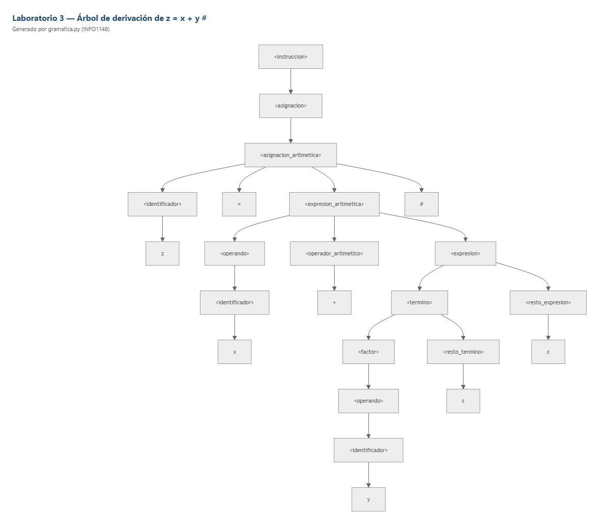

Para generar el PDF: Imprimir (Ctrl+P) → Guardar como PDF, tamano A4, margenes predeterminados, activar “Graficos de fondo”. Los diagramas Mermaid se dibujan al abrir el archivo (requiere conexion a Internet; si no hay, el arbol tambien esta en texto).
Asignatura: Teoría de la Computación — INFO1148 Tema: Gramáticas Libres de Contexto (GLC) Modalidad: Laboratorio práctico (parejas) Integrantes: Francisco Benavides · (integrante 2: completar) Docente: Prof. M. Lévano Puntaje: 100 puntos
Artefactos de este repositorio
| Artefacto | Ruta |
|---|---|
| Gramática en BNF numerada | gramatica/Lab3_gramatica.bnf |
| Validador (léxico + sintáctico) | gramatica/gramatica.py |
| Evidencia de validación | gramatica/salidas/validacion.txt |
Árbol de z = x + y # |
gramatica/salidas/arbol_z_igual_x_mas_y.txt · .dot · .mmd |
| Captura del árbol (PNG) | gramatica/salidas/arbol_z_igual_x_mas_y.png |
| Criterio de la rúbrica | Máx. | Dónde se responde | Evidencia verificable |
|---|---|---|---|
| P1. Identificación formal | 20 | §3 | Tablas §3.1–§3.2, definición §3.4, argumento §3.5 |
| P2. Construcción de la GLC | 30 | §4 | Producciones P1–P41, justificación §4.1–§4.5, verificación §4.6 |
| P3. Derivaciones y árbol | 25 | §5 | Derivaciones izquierdas §5.2–§5.3, árbol §5.4, explicación §5.5 |
| P4. Validación y errores | 25 | §6 | Tabla §6.1, análisis por caso §6.2, ejecución §6.3 |
| Coherencia interna | — | §5.7, §6.3 | Todas las cadenas se validan con el mismo parser que implementa la gramática |
| Notación | — | §3.4, §5.1 | BNF numerado + convención explícita de derivación |
| Justificación | — | §4.5, §6.2, §7.6 | Cada producción y cada caso tiene su explicación |
| Extensión creativa | — | §7 | Opción A (condicional) formalizada en P7 y P34–P41 y validada |
| Presentación | — | Todo el documento | Tablas, árbol gráfico y transcripción de la ejecución |
Nota metodológica. No se presentan producciones "sueltas": la gramática está implementada en un analizador léxico–sintáctico (
gramatica.py) que reproduce exactamente las producciones de §3.4. Todas las derivaciones, el árbol y la tabla de validación son coherentes con ese código, y su ejecución se transcribe en §6.3.
Diseñar, analizar y validar una Gramática Libre de Contexto (GLC) que represente la estructura sintáctica de un lenguaje de programación simplificado, identificando sus componentes (terminales, no terminales y símbolo inicial), construyendo las producciones, realizando derivaciones por la izquierda y comprobando la pertenencia de cadenas válidas e inválidas.
Alcance del trabajo. La gramática cubre: estructura de programa, asignación simple, asignación con expresión
aritmética (con precedencia entre * / % y + -), instrucción de salida, una o más instrucciones por programa y
comentarios. Como extensión creativa (Opción A) se agrega el condicional si … entonces … fin_si.
Begin
Programa operativo_01_02
x = 1.345 #
y = 20 #
/* operaciones y salidas */
z = x + y #
z2 = x + y #
h = z - x #
h2 = z - x #
k = h * y #
t = k / z #
m = k % 10 #
salida z #
salida h #
salida k #
salida t #
salida m #
temporal = 0 #
temporal = x #
x = y #
y = temporal #
salida x #
salida y #
End
Observaciones que guían el diseño:
Begin … End delimitan el programa y encierran una o más instrucciones.Programa va seguido de un identificador (operativo_01_02), que admite letras, dígitos y _.#; el # es obligatorio también en la última instrucción antes de End.x = 1.345 #) y con una operación (z = x + y #).salida z #), nunca un literal./* … */ entre instrucciones.El alfabeto de la gramática es finito y está formado por lexemas fijos y por clases de token (que representan conjuntos infinitos de lexemas):
Σ = { Begin, End, Programa, salida, si, entonces, fin_si,
+, -, *, /, %, <, >, <=, >=, ==, !=, =, #, ID, NUM, COMENT }
| Categoría | Terminales | Descripción / patrón | Origen |
|---|---|---|---|
| Palabras reservadas | Begin, End, Programa, salida |
Delimitan programa y marcan instrucciones. Son sensibles a mayúsculas tal como aparecen en el enunciado (Begin, End, Programa con mayúscula; salida en minúscula). |
Núcleo |
| Palabras reservadas (extensión) | si, entonces, fin_si |
Delimitan el condicional de la Opción A. | Extensión |
| Operadores aritméticos | +, -, *, /, % |
Operaciones binarias entre operandos. | Núcleo |
| Operadores relacionales (extensión) | <, >, <=, >=, ==, != |
Comparaciones usadas en la condición del si. |
Extensión |
| Símbolos especiales | = |
Operador de asignación. | Núcleo |
# |
Terminador de instrucción (obligatorio, incluso en la última instrucción). | Núcleo | |
| Identificadores | ID |
letra (letra | dígito | "_")*, es decir, comienza con letra y luego admite letras, dígitos y guion bajo. Ej.: x, y, temporal, operativo_01_02, z2. |
Núcleo |
| Números | NUM |
dígito+ ( "." dígito+ )? — enteros o reales positivos, sin signo y sin punto final. Ej.: 0, 20, 10, 1.345. |
Núcleo |
| Comentarios | COMENT |
/* … */, tratado como un solo token (ver §4.7 y Anexo A). |
Núcleo |
Convención léxica. Los espacios, tabuladores y saltos de línea no pertenecen al lenguaje: el analizador léxico los descarta antes de aplicar las producciones (por eso el programa de referencia puede estar escrito en varias líneas). El espacio en blanco no se incluye en Σ porque no aporta estructura sintáctica.
| No terminal | Función |
|---|---|
<programa> |
Unidad sintáctica completa: Begin Programa <id> <instrucciones> End. |
<lista_instrucciones> |
Secuencia de una o más instrucciones, con comentarios intercalados. |
<instruccion> |
Cualquier instrucción: asignación, salida o (extensión) condicional. |
<asignacion> |
Punto de decisión entre asignación simple y aritmética. |
<asignacion_simple> |
<id> = <operando> # (un único valor a la derecha). |
<asignacion_aritmetica> |
<id> = <expresión con al menos un operador> #. |
<expresion_aritmetica> |
Expresión que obliga a que exista al menos una operación. |
<expresion> |
Expresión aditiva: términos separados por + o -. |
<resto_expresion> |
Cola recursiva de <expresion> (o ε). |
<termino> |
Expresión multiplicativa: factores separados por *, / o %. |
<resto_termino> |
Cola recursiva de <termino> (o ε). |
<factor> |
Unidad mínima de una expresión. |
<operando> |
Identificador o número. |
<operador_aritmetico> |
Agrupa los cinco operadores aritméticos. |
<salida> |
salida <id> #. |
<identificador> |
Enlace con la clase léxica ID. |
<numero> |
Enlace con la clase léxica NUM. |
<comentario> |
Enlace con la clase léxica COMENT. |
<condicional> |
(Extensión) si <condición> entonces <instrucciones> fin_si. |
<condicion> |
(Extensión) <expresión> <op_relacional> <expresión>. |
<operador_relacional> |
(Extensión) Agrupa los seis operadores relacionales. |
V = { <programa>, <lista_instrucciones>, <instruccion>, <asignacion>, <asignacion_simple>,
<asignacion_aritmetica>, <expresion_aritmetica>, <expresion>, <resto_expresion>, <termino>,
<resto_termino>, <factor>, <operando>, <operador_aritmetico>, <salida>, <identificador>, <numero>,
<comentario>, <condicional>, <condicion>, <operador_relacional> } → |V| = 21.
S = <programa>. Es el único no terminal que produce un programa completo (desde Begin hasta End), por
lo que toda cadena del lenguaje debe derivarse a partir de él.
G = (V, Σ, P, S), donde
VyΣson los conjuntos de §3.1 y §3.2,S = <programa>yPes el conjunto de las 41 producciones que siguen (32 del núcleo + 9 de la extensión: P7 y P34–P41).
Notación: ε denota la producción vacía; cada producción se numera (P#) para referenciarla en las derivaciones.
| # | Producción | # | Producción |
|---|---|---|---|
| P1 | <programa> → Begin Programa <identificador> <lista_instrucciones> End |
P22 | <factor> → <operando> |
| P2 | <lista_instrucciones> → <instruccion> |
P23 | <operando> → <identificador> |
| P3 | <lista_instrucciones> → <instruccion> <lista_instrucciones> |
P24 | <operando> → <numero> |
| P4 | <lista_instrucciones> → <comentario> <lista_instrucciones> |
P25 | <operador_aritmetico> → + |
| P5 | <instruccion> → <asignacion> |
P26 | <operador_aritmetico> → - |
| P6 | <instruccion> → <salida> |
P27 | <operador_aritmetico> → * |
| P7 | <instruccion> → <condicional> ⟵ ext. |
P28 | <operador_aritmetico> → / |
| P8 | <asignacion> → <asignacion_simple> |
P29 | <operador_aritmetico> → % |
| P9 | <asignacion> → <asignacion_aritmetica> |
P30 | <salida> → salida <identificador> # |
| P10 | <asignacion_simple> → <identificador> = <operando> # |
P31 | <identificador> → ID |
| P11 | <asignacion_aritmetica> → <identificador> = <expresion_aritmetica> # |
P32 | <numero> → NUM |
| P12 | <expresion_aritmetica> → <operando> <operador_aritmetico> <expresion> |
P33 | <comentario> → COMENT |
| P13 | <expresion> → <termino> <resto_expresion> |
P34 | <condicional> → si <condicion> entonces <lista_instrucciones> fin_si ⟵ ext. |
| P14 | <resto_expresion> → + <termino> <resto_expresion> |
P35 | <condicion> → <expresion> <operador_relacional> <expresion> ⟵ ext. |
| P15 | <resto_expresion> → - <termino> <resto_expresion> |
P36 | <operador_relacional> → < ⟵ ext. |
| P16 | <resto_expresion> → ε |
P37 | <operador_relacional> → > ⟵ ext. |
| P17 | <termino> → <factor> <resto_termino> |
P38 | <operador_relacional> → <= ⟵ ext. |
| P18 | <resto_termino> → * <factor> <resto_termino> |
P39 | <operador_relacional> → >= ⟵ ext. |
| P19 | <resto_termino> → / <factor> <resto_termino> |
P40 | <operador_relacional> → == ⟵ ext. |
| P20 | <resto_termino> → % <factor> <resto_termino> |
P41 | <operador_relacional> → != ⟵ ext. |
| P21 | <resto_termino> → ε |
La misma gramática, en formato BNF listo para copiar en otra herramienta, está en
gramatica/Lab3_gramatica.bnf.
Porque ambos conjuntos son infinitos y una gramática es un objeto finito:
P sería infinita. Habría que escribir x → …, y → …, temporal → …, a1 → …, para cada nombre
posible; lo mismo con 0, 1, 2, … y con todos los reales. Ninguna herramienta (ni JFLAP) podría almacenar
ni procesar ese conjunto de producciones.contador_02) quedaría fuera del lenguaje
aunque sea sintácticamente idéntico a uno ya enumerado: la gramática describiría una lista cerrada de
programas, no un lenguaje.ID o NUM. La GLC trabaja entonces
sobre tokens, y cada clase (ID, NUM, COMENT) es un terminal. Así se mantiene Σ finito y P finito,
que es justamente lo que exige la definición de gramática.x = 20 # y operativo_01_02 = 1.345 # se derivan con las
mismas producciones (P10, P23/P24, P31/P32); solo cambia el lexema asociado al token.<programa> → Begin Programa <identificador> <lista_instrucciones> End
<lista_instrucciones> → <instruccion>
| <instruccion> <lista_instrucciones>
| <comentario> <lista_instrucciones>
Begin Programa <id> <lista> End. El identificador del
programa es obligatorio (en el ejemplo, operativo_01_02).<lista_instrucciones> y la lista solo puede cerrarse con P2, todo comentario queda seguido por al menos
una instrucción: se garantiza que el programa nunca quede sin instrucciones.<asignacion> → <asignacion_simple> | <asignacion_aritmetica>
<asignacion_simple> → <identificador> = <operando> #
<asignacion_aritmetica> → <identificador> = <expresion_aritmetica> #
<expresion_aritmetica> → <operando> <operador_aritmetico> <expresion>
La diferencia es estructural, no semántica:
| Forma | Ejemplo | Producciones | Rasgo que la distingue |
|---|---|---|---|
| Asignación simple | x = 20 #, temporal = x # |
P10 → P23/P24 | El lado derecho es un solo operando: no hay ningún operador aritmético. |
| Asignación con expresión | z = x + y #, m = k % 10 # |
P11 → P12 → … | El lado derecho contiene al menos un operador (P12 exige <operando> <op> <expresion>). |
¿Por qué no hay ambigüedad? P12 obliga a que el primer operador aparezca inmediatamente después del primer
operando, y los operandos son átomos (ID o NUM), no expresiones. Por lo tanto la frontera entre
"simple" y "aritmética" es única: si tras id = operando hay un operador, se aplica P11; si hay #, se aplica P10.
Si se hubiera escrito en su lugar <asignacion> → <id> = <expresion> # con una expresión que admite un solo
operando, x = 20 # tendría dos árboles (uno por la vía simple y otro por la aritmética) y la gramática sería
ambigua. Por eso se separan las dos producciones.
<salida> → salida <identificador> #
salida imprime solo identificadores (salida z #), tal como muestra el programa de referencia; no se admite
salida 20 # ni salida x + y #. El # es obligatorio: salida z no es una instrucción.
La jerarquía <expresion> → <termino> → <factor> → <operando> codifica la precedencia:
menor precedencia ─────────────────────────► mayor precedencia
<expresion> (+ -) → <termino> (* / %) → <factor> → <operando>
+ y - se combinan en <resto_expresion> (P14–P16), que solo contiene términos.*, / y % se combinan en <resto_termino> (P18–P21), que solo contiene factores.a + b * c el * queda más abajo en el árbol (se evalúa primero), porque b * c se
deriva dentro de un <termino>; mientras que en a * b + c la suma queda en la raíz de la expresión.Observación sobre asociatividad. Al ser recursivas por la derecha, P14/P15 producen árboles
a - (b - c)paraa - b - c. El lenguaje generado es el mismo que con producciones recursivas por la izquierda (<expresion> → <expresion> + <termino> | <expresion> - <termino> | <termino>), que daría(a - b) - c. Se eligió la forma recursiva por la derecha porque las derivaciones por la izquierda son más legibles y el árbol es más fácil de dibujar; la asociatividad semántica no forma parte de lo evaluado en este laboratorio (el enunciado no incluye paréntesis ni evaluación).
| No terminal | Por qué existe / qué aporta | Ejemplo que lo ejercita |
|---|---|---|
<programa> |
Aísla el esqueleto Begin … End y da un símbolo inicial único. |
Programa completo. |
<lista_instrucciones> |
Resuelve "una o más instrucciones" con recursión (P2/P3) y admite comentarios (P4). | Las 21 líneas del ejemplo. |
<instruccion> |
Uniformiza el contenido de la lista y concentra la decisión entre las tres clases de instrucción (P5–P7). | x = 1 #, salida x #, si …. |
<asignacion> |
Separa la decisión simple/aritmética del resto (P8/P9). | x = 1 # vs. x = 1 + 2 #. |
<asignacion_simple> |
Reconoce asignaciones de un solo valor (P10). | temporal = x #. |
<asignacion_aritmetica> |
Reconoce asignaciones con operación (P11). | z = x + y #. |
<expresion_aritmetica> |
Obliga a que exista al menos un operador; sin ella no se podría distinguir la asignación simple. | x + y, k % 10. |
<expresion> |
Nivel aditivo: agrupa términos con +/-. |
z - x. |
<resto_expresion> |
Recursión del nivel aditivo y caso base ε. | x + y + z. |
<termino> |
Nivel multiplicativo: agrupa factores con *, /, %. |
h * y, k / z. |
<resto_termino> |
Recursión del nivel multiplicativo y caso base ε. | a * b / c. |
<factor> |
Unidad de la expresión; permite ampliar el lenguaje (p. ej. paréntesis) sin tocar los demás niveles. | 10, x. |
<operando> |
Único punto donde se elige entre identificador y número (P23/P24). | x, 1.345. |
<operador_aritmetico> |
Agrupa los cinco operadores en un solo no terminal (legibilidad y extensión). | +, %. |
<salida> |
Estructura propia de impresión (P30). | salida z #. |
<identificador> |
Enlace con el token ID; mantiene la gramática independiente de los lexemas concretos. |
operativo_01_02. |
<numero> |
Enlace con el token NUM (enteros y reales). |
1.345. |
<comentario> |
Enlace con el token COMENT; permite comentarios sin contaminar las instrucciones. |
/* … */. |
<condicional> |
(Ext.) Estructura de control con condición y bloque propio. | si x > 10 entonces … fin_si. |
<condicion> |
(Ext.) Separa la condición del bloque para que sea reutilizable. | x > 10. |
<operador_relacional> |
(Ext.) Agrupa las seis comparaciones. | >=, !=. |
Sí. El programa de §2, con sus 20 instrucciones y su comentario, se deriva desde <programa> aplicando
P1, P3 (varias veces), P5/P9/P6, P2 (cierre de la lista) y P4 para el comentario. La verificación no es
declarativa: el validador lo procesa y responde ACEPTADO, contando los elementos reconocidos:
| Elemento del programa | Producción aplicada | Cantidad detectada |
|---|---|---|
Begin … End con identificador |
P1 + P31 | 1 programa (operativo_01_02) |
Asignaciones simples (x = 1.345 #, y = 20 #, temporal = 0 #, temporal = x #, x = y #, y = temporal #) |
P10, P23/P24 | 6 |
Asignaciones aritméticas (z, z2, h, h2, k, t, m) |
P11, P12 | 7 |
Salidas (z, h, k, t, m, x, y) |
P30 | 7 |
Comentario /* operaciones y salidas */ |
P4, P33 | 1 |
| Total de elementos de la lista | P2/P3/P4 | 21 |
Los números coinciden con el programa: 20 instrucciones + 1 comentario = 21 elementos. Además, los números
1.345 (real) y 20, 0, 10 (enteros) se aceptan con la misma clase NUM (P32), lo que confirma que no hace
falta enumerar valores.
<identificador> y solo puede continuar con # tras un operando; P12 obliga
a un operador; P14/P15 se distinguen por +/-; P18–P20 por *///%. En <lista_instrucciones>, la
alternativa se decide por el token (ID/salida/si vs. COMENT) y toda lista termina con P2. Por lo tanto
cada cadena tiene un único árbol de derivación.Begin o #.
Modelarlo carácter por carácter exigiría producciones para todo el alfabeto y no aporta estructura
sintáctica: se reconoce con la regla regular COMENT (Anexo A) y la GLC lo ve como un único símbolo
terminal, igual que ID y NUM. Se admiten antes o entre instrucciones, pero no como último
elemento de la lista: P4 obliga a que tras un comentario venga otra <lista_instrucciones>, que termina
en una instrucción (P2). Es una decisión de diseño para no aceptar programas sin instrucciones; si se
quisiera admitir un comentario final, bastaría agregar <lista_instrucciones> → <comentario> (o
introducir un no terminal auxiliar para conservar la restricción).<factor> solo admite un
operando. Añadirlos sería una extensión natural (<factor> → ( <expresion> )), pero cambiaría el lenguaje
solicitado.-5 no es un NUM: el - es un operador binario. 1. tampoco es válido (la parte
decimal exige al menos un dígito), lo que el analizador léxico reporta como error.Begin/End/Programa con mayúscula
inicial y salida en minúscula, tal como aparecen en el enunciado. begin sería un identificador, no una
palabra reservada.⇒ : una derivación en un paso (aplicación de una producción al no terminal más a la izquierda).⇒* : derivación en cero o más pasos.ε : cadena vacía; al final de una derivación no aporta símbolos a la forma sentencial.<identificador> ⇒ z significa
<identificador> ⇒ ID ⇒ z (P31 y reconocimiento léxico). El Anexo A muestra la expansión completa carácter por
carácter de un identificador y de un número real.z = x + y #| Paso | Forma sentencial | Producción |
|---|---|---|
| 0 | <instruccion> |
— |
| 1 | <asignacion> |
P5 |
| 2 | <asignacion_aritmetica> |
P9 |
| 3 | <identificador> = <expresion_aritmetica> # |
P11 |
| 4 | z = <expresion_aritmetica> # |
P31 (léxica) |
| 5 | z = <operando> <operador_aritmetico> <expresion> # |
P12 |
| 6 | z = <identificador> <operador_aritmetico> <expresion> # |
P23 |
| 7 | z = x <operador_aritmetico> <expresion> # |
P31 (léxica) |
| 8 | z = x + <expresion> # |
P25 |
| 9 | z = x + <termino> <resto_expresion> # |
P13 |
| 10 | z = x + <factor> <resto_termino> <resto_expresion> # |
P17 |
| 11 | z = x + <operando> <resto_termino> <resto_expresion> # |
P22 |
| 12 | z = x + <identificador> <resto_termino> <resto_expresion> # |
P23 |
| 13 | z = x + y <resto_termino> <resto_expresion> # |
P31 (léxica) |
| 14 | z = x + y ε <resto_expresion> # |
P21 |
| 15 | z = x + y ε ε # |
P16 |
| 16 | z = x + y # |
ε no aporta símbolos |
Resultado: <instruccion> ⇒* z = x + y #. ✔
salida z #| Paso | Forma sentencial | Producción |
|---|---|---|
| 0 | <instruccion> |
— |
| 1 | <salida> |
P6 |
| 2 | salida <identificador> # |
P30 |
| 3 | salida z # |
P31 (léxica) |
Resultado: <instruccion> ⇒* salida z #. ✔
z = x + y #Árbol generado automáticamente por el analizador (por lo tanto, consistente con la gramática). Puede
abrirse en cualquier visor de Mermaid o renderizarse desde
arbol_z_igual_x_mas_y.dot con Graphviz; no se requiere JFLAP.
graph TD n0["<instruccion>"] n1["<asignacion>"] n2["<asignacion_aritmetica>"] n3["<identificador>"] n4["z"] n5["="] n6["<expresion_aritmetica>"] n7["<operando>"] n8["<identificador>"] n9["x"] n10["<operador_aritmetico>"] n11["+"] n12["<expresion>"] n13["<termino>"] n14["<factor>"] n15["<operando>"] n16["<identificador>"] n17["y"] n18["<resto_termino>"] n19["ε"] n20["<resto_expresion>"] n21["ε"] n22["#35;"] n0 --> n1 n1 --> n2 n2 --> n3 n3 --> n4 n2 --> n5 n2 --> n6 n6 --> n7 n7 --> n8 n8 --> n9 n6 --> n10 n10 --> n11 n6 --> n12 n12 --> n13 n13 --> n14 n14 --> n15 n15 --> n16 n16 --> n17 n13 --> n18 n18 --> n19 n12 --> n20 n20 --> n21 n2 --> n22
Versión textual (idéntica al archivo arbol_z_igual_x_mas_y.txt):
<instruccion>
└── <asignacion>
└── <asignacion_aritmetica>
├── <identificador>
│ └── z
├── =
├── <expresion_aritmetica>
│ ├── <operando>
│ │ └── <identificador>
│ │ └── x
│ ├── <operador_aritmetico>
│ │ └── +
│ └── <expresion>
│ ├── <termino>
│ │ ├── <factor>
│ │ │ └── <operando>
│ │ │ └── <identificador>
│ │ │ └── y
│ │ └── <resto_termino>
│ │ └── ε
│ └── <resto_expresion>
│ └── ε
└── #
Captura renderizada (evidencia gráfica; también en
../gramatica/salidas/arbol_z_igual_x_mas_y.png):

<instruccion> en este caso. Si el árbol se construye dentro
de un programa completo, la raíz sería <programa> (el símbolo inicial S de la gramática). La raíz fija qué
se está derivando; aquí se derivó una instrucción porque la cadena pedida es una instrucción suelta (§5.7
muestra la derivación desde <programa>).V y corresponde a una producción
aplicada. Por ejemplo, <asignacion_aritmetica> (n2) existe porque se aplicó P11: sus tres hijos sintácticos
son <identificador>, = y <expresion_aritmetica> (más el #).z, =, x, +, y, #) o ε. Leídas de izquierda a
derecha reconstruyen exactamente la cadena derivada. La secuencia de hojas se denomina fronda:
z = x + y #.<resto_termino> → ε y <resto_expresion> → ε son hojas que no aportan
caracteres; están en el árbol porque explicitan que la recursión terminó (caso base).+ está por encima de <termino>, que es donde se alojarían *, / o %.| Cadena | ¿Se genera? | Derivación (esquema) | Justificación |
|---|---|---|---|
x = 20 # |
Sí | <instruccion> ⇒ <asignacion> ⇒ <asignacion_simple> ⇒ <identificador> = <operando> # ⇒ x = <numero> # ⇒ x = 20 # (P5, P8, P10, P31, P24, P32) |
El lado derecho es un solo operando (un número entero): se aplica la vía simple, no la aritmética. |
z = x * y # |
Sí | <instruccion> ⇒ <asignacion> ⇒ <asignacion_aritmetica> ⇒ <id> = <expresion_aritmetica> # ⇒ z = <operando> <operador_aritmetico> <expresion> # ⇒ z = x * <expresion> # ⇒ z = x * y # (P5, P9, P11, P31, P12, P23, P31, P27, P13, P17, P22, P23, P31, P21, P16) |
* es uno de los cinco operadores de P27; la expresión se cierra con las producciones ε (P21, P16). |
salida temporal # |
Sí | <instruccion> ⇒ <salida> ⇒ salida <identificador> # ⇒ salida temporal # (P6, P30, P31) |
temporal es un ID válido (letras y sin caracteres prohibidos); P30 no impone longitud al identificador. |
Las tres derivaciones fueron verificadas por el validador: las tres se aceptan (§6.3).
<programa>)Para mostrar que la instrucción de §5.2 no es un caso aislado, se deriva el programa mínimo que la contiene,
Begin Programa p z = x + y # End:
<programa>
⇒ Begin Programa <identificador> <lista_instrucciones> End (P1)
⇒ Begin Programa p <lista_instrucciones> End (P31)
⇒ Begin Programa p <instruccion> End (P2)
⇒ Begin Programa p <asignacion> End (P5)
⇒ Begin Programa p <asignacion_aritmetica> End (P9)
⇒ Begin Programa p <identificador> = <expresion_aritmetica> # End (P11)
⇒ Begin Programa p z = <expresion_aritmetica> # End (P31)
⇒ … (pasos 5–15 de §5.2) …
⇒ Begin Programa p z = x + y # End
Con P3 en lugar de P2, el mismo esquema produce programas con varias instrucciones, que es lo que exige el programa de referencia.
| Caso | Cadena | ¿Válida? | Token donde se detecta el problema | Elemento faltante o fuera de posición |
|---|---|---|---|---|
| 1 | x = 10 # |
Sí | — | — |
| 2 | z = x + y # |
Sí | — | — |
| 3 | salida z # |
Sí | — | — |
| 4 | x 10 # |
No | NUM 10 (col. 3) |
Falta = entre el identificador y el número (P10 exige <identificador> = <operando> #). |
| 5 | z = + x y # |
No | OP_ARIT + (col. 5) |
(i) El operador + está al inicio de la expresión: falta el operando de la izquierda (P12 exige <operando> <op> <expresion>). (ii) Aun corrigiendo (i), falta un operador entre x e y. |
| 6 | salida # |
No | HASH # (col. 8) |
Falta el <identificador> que se desea imprimir (P30 exige salida <identificador> #). |
| 7 | x = 20 |
No | EOF (col. 7) |
Falta el terminador # al final de la instrucción (P10/P11). |
| 8 | Begin / Programa prueba / x = 5 # / salida x # / End |
Sí | — | — (los / representan los saltos de línea; el espacio en blanco no pertenece a Σ). |
Caso 1 — x = 10 # (válida). Se deriva por la vía simple: <asignacion_simple> ⇒ <identificador> = <operando> #,
con <operando> ⇒ <numero> ⇒ 10 (P10, P23, P24, P32). El # cierra la instrucción.
Caso 2 — z = x + y # (válida). Es la derivación de §5.2. El operador + obliga a la vía P11 (asignación
aritmética); el árbol está en §5.4.
Caso 3 — salida z # (válida). Derivación de §5.3. salida es palabra reservada (no un identificador) y el
identificador impreso es obligatorio.
Caso 4 — x 10 # (inválida). El parser consume el identificador x y, al aplicar P10, espera =; encuentra
10 (NUM). El número está en el lugar donde debía ir el operador de asignación: falta =. No es un problema
de tipo ni de orden de los operandos, sino de un terminal obligatorio ausente.
Caso 5 — z = + x y # (inválida). Hay dos defectos:
<operando> <operador_aritmetico> <expresion>) exige que la expresión comience con un operando; el
primer token tras = es +, es decir, el operador aparece antes de su operando izquierdo (el lenguaje no
tiene operadores unarios, por lo que +x no existe).+, quedaría z = x y #: entre x e y no hay operador, y una expresión solo puede
encadenar operandos a través de <resto_expresion> (P14/P15) o <resto_termino> (P18–P20). Falta un
operador entre ambos identificadores.
El analizador reporta el primer defecto (posición col. 5) porque es el que aparece primero en la lectura.Caso 6 — salida # (inválida). P30 exige salida <identificador> #; al consumir salida el siguiente token
debe ser un ID, pero es #. Falta el identificador de salida. (Imprimir un literal no está contemplado en
el lenguaje del enunciado.)
Caso 7 — x = 20 (inválida). La asignación simple se deriva hasta x = 20 y luego P10 exige #; la entrada
termina (EOF). Falta el terminador de instrucción. Este caso muestra por qué el # es un terminal y no un
separador opcional: sin él la instrucción queda incompleta, incluso si es la última del programa.
Caso 8 — programa completo (válida). La estructura es Begin Programa prueba + <lista_de_instrucciones> +
End. Aplicando P1, P3 (dos instrucciones) y P2, con x = 5 # por P10 y salida x # por P30, la cadena se
deriva por completo. Los / del enunciado son saltos de línea: el analizador léxico los descarta, por lo que no
afectan la validez. Nótese que prueba es un ID válido y que x se usa antes de asignarse: eso es un problema
semántico, no sintáctico, y la GLC no lo detecta (ni se le pide).
Los resultados anteriores no son declarativos: se obtienen ejecutando el validador, que implementa exactamente las producciones de §3.4.
> python Lab3/gramatica/gramatica.py
PREGUNTA 2 - Programa de referencia completo
Resultado: ACEPTADO - Cadena valida
- asignaciones simples : 6
- asignaciones aritmeticas : 7
- instrucciones de salida : 7
- comentarios : 1
- total de elementos : 21
PREGUNTA 4 - Validacion de cadenas
Caso Cadena Esperado Obtenido Estado
1 x = 10 # VALIDA VALIDA OK
2 z = x + y # VALIDA VALIDA OK
3 salida z # VALIDA VALIDA OK
4 x 10 # INVALIDA INVALIDA OK
Analisis: se encontro NUM '10' ...; se esperaba: =
5 z = + x y # INVALIDA INVALIDA OK
Analisis: se encontro OP_ARIT '+' ...; se esperaba: ID, NUM
6 salida # INVALIDA INVALIDA OK
Analisis: se encontro HASH '#' ...; se esperaba: identificador
7 x = 20 INVALIDA INVALIDA OK
Analisis: se encontro EOF ...; se esperaba: #
8 Begin Programa prueba ... VALIDA VALIDA OK
PREGUNTA 3 - Arbol de derivacion de 'z = x + y #'
Resultado: ACEPTADO - Cadena valida
Fronda (hojas de izquierda a derecha): z = x + y #
Fallos: 0
gramatica/salidas/validacion.txt.python Lab3/gramatica/gramatica.py --check.Fallos: 0).si … entonces … fin_sisi <condición> entonces
<una o más instrucciones>
fin_si
<, >, <=, >=,
==, !=.<lista_instrucciones> del núcleo, por lo que admite asignaciones, salidas, otras
condiciones (anidamiento) y comentarios.fin_si es obligatorio (no hay forma de confundirlo con End, que cierra el programa).Ejemplo válido:
Begin
Programa control_01
x = 12 #
si x > 10 entonces
salida x #
y = x + 1 #
fin_si
salida y #
End
Se agregan 9 producciones sin tocar las 32 del núcleo:
<instruccion> → … | <condicional> (* P7 *)
<condicional> → si <condicion> entonces <lista_instrucciones> fin_si (* P34 *)
<condicion> → <expresion> <operador_relacional> <expresion> (* P35 *)
<operador_relacional> → < | > | <= | >= | == | != (* P36–P41 *)
¿Rompe la gramática existente? No:
<instruccion>; las alternativas P5/P6 siguen siendo válidas para todo programa
anterior (el lenguaje previo es un subconjunto del nuevo).<expresion> (P13–P29), por lo que hereda precedencia y operandos sin duplicar reglas.<lista_instrucciones> ya existente, lo que da anidamiento gratis:
si a > b entonces si c < d entonces x = 1 # fin_si fin_si es válido.sino: cada si tiene exactamente un fin_si.| Tipo | Nuevos símbolos | Función |
|---|---|---|
| Terminales (palabras reservadas) | si, entonces, fin_si |
Delimitan el condicional. |
| Terminales (operadores) | <, >, <=, >=, ==, != |
Comparaciones de la condición. |
| No terminal | <condicional> |
Estructura completa del condicional. |
| No terminal | <condicion> |
Comparación entre dos expresiones. |
| No terminal | <operador_relacional> |
Agrupa los seis operadores relacionales. |
Nota léxica:
<y<=(o>y>=) se distinguen por maximal munch: el analizador léxico consume siempre el operador más largo posible.=y==son tokens distintos (asignación vs. igualdad); el lexer reconoce==antes que=.
| Cadena | Resultado | Detalle |
|---|---|---|
si x > 10 entonces y = x + 1 # fin_si |
Válida | Condición x > 10 (P35), cuerpo con una asignación aritmética (P9) y cierre fin_si. |
si x >= 10 entonces salida x # fin_si |
Válida | Usa un operador relacional de dos caracteres y una salida como cuerpo. |
si x > 10 entonces y = x + 1 # |
Inválida | Falta fin_si: al llegar al fin de la entrada el parser espera el cierre (P34). |
si entonces y = 1 # fin_si |
Inválida | Falta la condición entre si y entonces (P35 exige al menos un operando a cada lado). |
Ambas cadenas inválidas fueron verificadas con el validador, que reporta el token y lo que esperaba
(§6.3 / validacion.txt).
Para si x > 10 entonces y = x + 1 # fin_si, desde <instruccion>:
| Paso | Forma sentencial | Producción |
|---|---|---|
| 0 | <instruccion> |
— |
| 1 | <condicional> |
P7 |
| 2 | si <condicion> entonces <lista_instrucciones> fin_si |
P34 |
| 3 | si <expresion> <operador_relacional> <expresion> entonces <lista_instrucciones> fin_si |
P35 |
| 4 | si <termino> <resto_expresion> <operador_relacional> <expresion> entonces … |
P13 |
| 5 | si <factor> <resto_termino> <resto_expresion> <operador_relacional> <expresion> entonces … |
P17 |
| 6 | si <operando> <resto_termino> <resto_expresion> <operador_relacional> <expresion> entonces … |
P22 |
| 7 | si <identificador> <resto_termino> <resto_expresion> <operador_relacional> <expresion> entonces … |
P23 |
| 8 | si x <resto_termino> <resto_expresion> <operador_relacional> <expresion> entonces … |
P31 |
| 9 | si x ε ε <operador_relacional> <expresion> entonces … |
P21, P16 |
| 10 | si x > <expresion> entonces … |
P37 |
| 11 | si x > <termino> <resto_expresion> entonces … |
P13 |
| 12 | si x > <factor> <resto_termino> <resto_expresion> entonces … |
P17 |
| 13 | si x > <operando> <resto_termino> <resto_expresion> entonces … |
P22 |
| 14 | si x > <numero> <resto_termino> <resto_expresion> entonces … |
P24 |
| 15 | si x > 10 <resto_termino> <resto_expresion> entonces … |
P32 |
| 16 | si x > 10 ε ε entonces <lista_instrucciones> fin_si |
P21, P16 |
| 17 | si x > 10 entonces <lista_instrucciones> fin_si |
— |
| 18 | si x > 10 entonces <instruccion> fin_si |
P2 |
| 19 | si x > 10 entonces <asignacion> fin_si |
P5 |
| 20 | si x > 10 entonces <asignacion_aritmetica> fin_si |
P9 |
| 21 | si x > 10 entonces <identificador> = <expresion_aritmetica> # fin_si |
P11 |
| 22 | si x > 10 entonces y = <expresion_aritmetica> # fin_si |
P31 |
| 23 | si x > 10 entonces y = <operando> <operador_aritmetico> <expresion> # fin_si |
P12 |
| 24 | si x > 10 entonces y = x + <expresion> # fin_si |
P23, P31, P25 |
| 25 | si x > 10 entonces y = x + <termino> <resto_expresion> # fin_si |
P13 |
| 26 | si x > 10 entonces y = x + <factor> <resto_termino> <resto_expresion> # fin_si |
P17 |
| 27 | si x > 10 entonces y = x + <operando> <resto_termino> <resto_expresion> # fin_si |
P22 |
| 28 | si x > 10 entonces y = x + <identificador> <resto_termino> <resto_expresion> # fin_si |
P23 |
| 29 | si x > 10 entonces y = x + 1 <resto_termino> <resto_expresion> # fin_si |
P32 |
| 30 | si x > 10 entonces y = x + 1 ε ε # fin_si |
P21, P16 |
| 31 | si x > 10 entonces y = x + 1 # fin_si |
ε no aporta símbolos |
Los pasos 24–30 son exactamente la derivación de la asignación aritmética de §5.2: la extensión reutiliza la gramática existente en lugar de duplicarla.
Se eligió la Opción A porque:
<condicional> dentro de <instruccion>) y una nueva
categoría de operadores (relacionales), lo que evidencia el manejo de precedencia y de tokens de dos
caracteres.<lista_instrucciones>, mostrando que el diseño del núcleo era modular.Limitaciones conscientes: no se agregó sino (evita el problema dangling-else y mantiene la gramática no
ambigua), ni comparaciones encadenadas (a < b < c), ni operadores lógicos (y, o). Cualquiera de ellos podría
añadirse con el mismo patrón: nuevas producciones que reutilicen <expresion> y <lista_instrucciones>.
V y abstraer identificadores, números y
comentarios como clases de token es lo que hace posible escribir una gramática finita para un lenguaje
infinito (§3.5); enumerar valores sería imposible incluso para un subconjunto pequeño del programa de
referencia.<expresion> → <termino> → <factor> → <operando> codifica la
precedencia de los cinco operadores y deja el árbol alineado con la semántica esperada (§4.4, §5.5).<expresion> y <lista_instrucciones>; el lenguaje previo queda como subconjunto del nuevo (§7.2).Begin Programa prueba x = 5 # salida y # End es sintácticamente válido aunque y
no esté definida; detectar eso requiere análisis semántico, fuera del alcance de una GLC (§6.2, caso 8).ID, NUM y COMENT)Las tres clases de token se definen con reglas regulares (equivalentes a autómatas finitos), lo que justifica tratarlas como un solo terminal en la GLC:
| Token | Expresión regular | Ejemplos válidos | Ejemplos inválidos |
|---|---|---|---|
ID |
[a-zA-Z] [a-zA-Z0-9_]* |
x, z2, temporal, operativo_01_02 |
2x, _tmp, a-b |
NUM |
[0-9]+ ( "." [0-9]+ )? |
0, 20, 10, 1.345 |
.5, 1., -4 |
COMENT |
/\* ([^*] | \*+ [^*/] )* \*+/ |
/* operaciones y salidas */ |
/* sin cerrar |
Derivación a nivel de caracteres (expansión completa de la abreviatura usada en §5, con una gramática léxica equivalente):
<identificador> ⇒ <letra> <resto_id> (id → letra resto)
⇒ z <resto_id> (letra → z)
⇒ z ε (resto_id → ε)
<numero> ⇒ <entero> <parte_decimal> (num → entero parte_decimal)
⇒ <digito> <resto_entero> <parte_decimal> (entero → digito resto_entero)
⇒ 1 <resto_entero> <parte_decimal> (digito → 1)
⇒ 1 ε <parte_decimal> (resto_entero → ε)
⇒ 1 . <digito> <resto_entero> (parte_decimal → . digito resto_entero)
⇒ 1 . 3 <resto_entero> (digito → 3)
⇒ 1 . 3 4 <resto_entero> (resto_entero → digito resto_entero)
⇒ 1 . 3 4 5 <resto_entero> (resto_entero → digito resto_entero)
⇒ 1 . 3 4 5 ε (resto_entero → ε)
Reglas utilizadas: <letra> → a | … | z | A | … | Z; <digito> → 0 | … | 9;
<resto_id> → <letra> <resto_id> | <digito> <resto_id> | _ <resto_id> | ε;
<resto_entero> → <digito> <resto_entero> | ε; <parte_decimal> → . <digito> <resto_entero> | ε (por eso 1.
no es válido: el punto exige al menos un dígito).
# Validar todo (programa de referencia, tabla de la P4 y extensión)
python Lab3/gramatica/gramatica.py
# Solo comprobación rápida (código de salida 0 = todo coincide)
python Lab3/gramatica/gramatica.py --check
| Archivo generado | Contenido |
|---|---|
gramatica/salidas/validacion.txt |
Transcripción completa de la ejecución. |
gramatica/salidas/arbol_z_igual_x_mas_y.txt |
Árbol de z = x + y # en texto. |
gramatica/salidas/arbol_z_igual_x_mas_y.dot |
Árbol en formato Graphviz (renderizable con dot -Tpng). |
gramatica/salidas/arbol_z_igual_x_mas_y.mmd |
Árbol en Mermaid. |
gramatica/salidas/arbol_z_igual_x_mas_y.png |
Captura renderizada del árbol (evidencia gráfica). |
gramatica/salidas/arbol_programa_referencia.dot |
Árbol del programa de referencia completo. |
Requisitos: Python 3.9 o superior, sin dependencias externas (solo biblioteca estándar).
| Criterio (nivel "Excelente") | ¿Se cumple? | Dónde |
|---|---|---|
P1: identifica terminales, no terminales, símbolo inicial y define G=(V,Σ,P,S) con precisión + explicación conceptual clara |
✔ | §3.1–§3.5 |
| P1: explica por qué no enumerar identificadores y números | ✔ | §3.5 |
| P2: gramática correcta, representa todas las estructuras y permite múltiples instrucciones; producciones claras y justificadas | ✔ | §4.1–§4.6 |
| P2: diferencia asignación simple, aritmética y salida | ✔ | §4.2–§4.3 |
| P2: verifica el programa de referencia completo | ✔ | §4.6 (+ ejecución §6.3) |
| P3: derivaciones por la izquierda completas y correctas | ✔ | §5.2, §5.3, §5.7, §7.5 |
| P3: árbol consistente + explicación nodos/símbolos/hojas | ✔ | §5.4–§5.5 |
| P3: decide pertenencia de las tres cadenas y justifica | ✔ | §5.6 |
| P4: clasifica las 8 cadenas, justifica y detecta elementos faltantes o mal ubicados | ✔ | §6.1–§6.2 |
| Transversal: coherencia interna (derivaciones, árbol y validaciones corresponden a la gramática) | ✔ | Todo se genera desde gramatica.py |
| Transversal: notación consistente | ✔ | §3.4 (P1–P41), §5.1 |
| Transversal: extensión creativa formalizada y evaluada | ✔ | §7 |
| Transversal: presentación legible | ✔ | Tablas, árbol gráfico y transcripción |